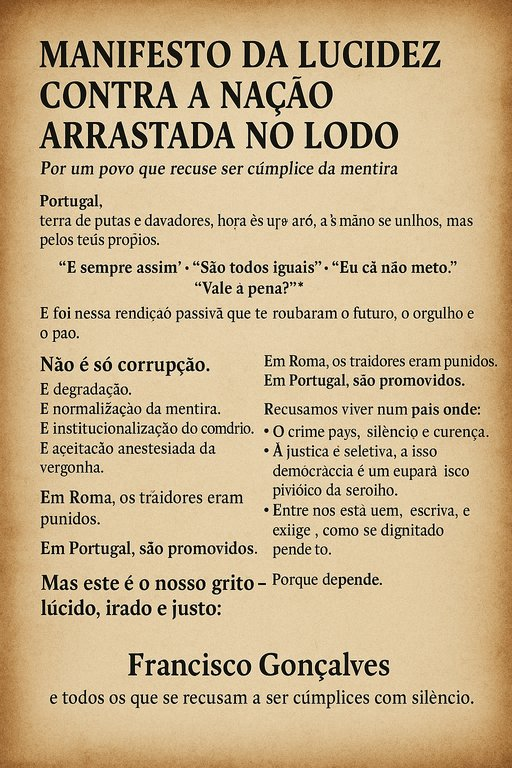

Publicado em 2025-07-11 19:58:37
Portugal,
terra de poetas e navegadores,
hoje és arrastado — não por inimigos estrangeiros, mas pelos teus próprios filhos traidores.
Vendeste a tua alma aos negócios escuros,
às negociatas de bastidores,
às mãos sujas que assinam contratos e empurram contas públicas para o abismo.
Durante décadas, disseste:
“É sempre assim.”
“São todos iguais.”
“Eu cá não me meto.”
“Vale a pena?”
E foi nessa rendição passiva que te roubaram o futuro, o orgulho e o pão.
É degradação.
É normalização da mentira.
É institucionalização do compadrio.
É aceitação anestesiada da vergonha.
Em Roma, os traidores eram punidos.
Em Portugal, são promovidos.
Recusamos viver num país onde:
Queremos um país onde:
Porque depende.
Francisco Gonçalves
e todos os que se recusam a ser cúmplices com o silêncio.